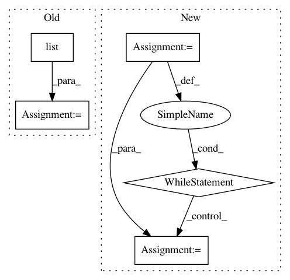

f0ac6351b5ee28846121158b7f0cd34a109bef9a,niftynet/utilities/misc_io.py,,match_volume_shape_to_patch_definition,#Any#Any#,349
Before Change
return None
if patch is None:
return None
spatial_shape = list(image_data.shape[:int(np.ceil(patch.spatial_rank))])
spatial_shape += [1]*(3-int(np.ceil(patch.spatial_rank)))
return np.reshape(image_data,spatial_shape+[-1])
def spatial_padding_to_indexes(spatial_padding):
After Change
// always casting to 4D input volume [H x W x D x Modality]
while image_data.ndim > 4:
image_data = image_data[..., 0]
while image_data.ndim < 4:
image_data = np.expand_dims(image_data, axis=-1)
return image_data
def spatial_padding_to_indexes(spatial_padding):
In pattern: SUPERPATTERN
Frequency: 3
Non-data size: 5
Instances
Project Name: NifTK/NiftyNet
Commit Name: f0ac6351b5ee28846121158b7f0cd34a109bef9a
Time: 2017-07-22
Author: wenqi.li@ucl.ac.uk
File Name: niftynet/utilities/misc_io.py
Class Name:
Method Name: match_volume_shape_to_patch_definition
Project Name: miso-belica/sumy
Commit Name: c16886fefa4cca5f7b45e52ff2fcb1b89876c70a
Time: 2013-03-05
Author: miso.belica@gmail.com
File Name: sumy/algorithms/luhn.py
Class Name: LuhnMethod
Method Name: __remove_trailing_zeros
Project Name: eth-cscs/reframe
Commit Name: 91855bdc8c0dcb933821be0fdb356cc43ffce585
Time: 2019-05-25
Author: karakasis@cscs.ch
File Name: reframe/frontend/dependency.py
Class Name:
Method Name: validate_deps